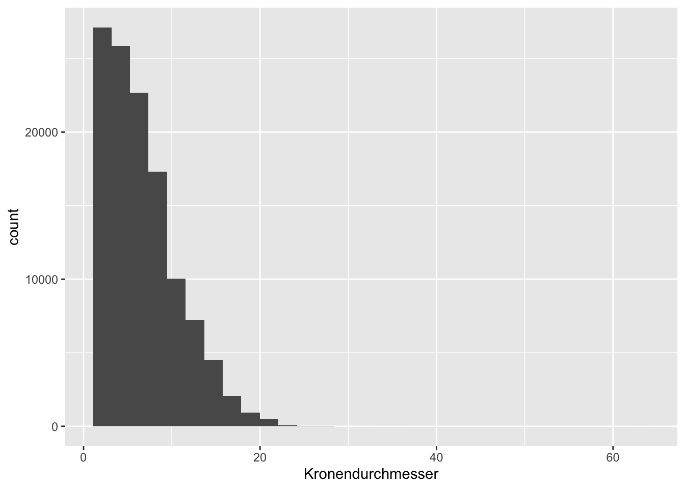
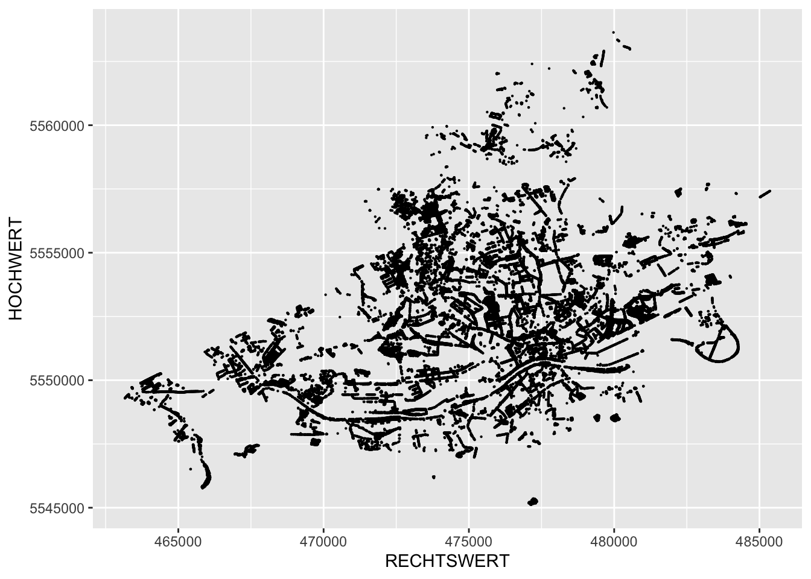

Teil 3 Karten erstellen (FTR)
3.1 Lernziele dieser Sitzung
Sie können…
- Pipes benutzen
- einfache
dplyr-Befehle ausführen - Koordinaten visualisieren
3.2 Voraussetzungen
Wir laden erstmal tidyverse:
library(tidyverse)3.3 Exkurs: Pipes
Teil vom tidyverse ist auch das Paket magrittr, das einen besonderen Operator enthält: %>%
Der Operator %>% heißt Pipe
und setzt das Ergebnis der vorherigen Funktion als ersten Parameter in die nächste Funktion ein. Zur Veranschaulichung:
anzahl_buchstaben <- length(letters)
sqrt(anzahl_buchstaben)…ist das gleiche wie…
sqrt(length(letters))…ist das gleiche wie…
length(letters) %>%
sqrt()…ist das gleiche wie…
letters %>%
length %>%
sqrt()So können beliebig viele Funktionen aneinandergereiht werden. Und mit -> kann eine Variable „in die andere Richtung“ zugewiesen werden
letters %>%
length() %>%
sqrt() %>%
round() %>%
as.character() ->
my_varGerade bei komplizierteren Zusammenhängen wird der Code so oft lesbarer, weil die Logik von links nach rechts, bzw. von oben nach unten gelesen werden kann.
3.4 Daten importieren
Beim Open-Data-Portal der Stadt Frankfurt steht ein Baumkataster zur Verfügung.
Die Datei im CSV-Format (comma separated values) kann entweder heruntergeladen und durch klicken importiert werden, oder direkt über den Befehl:
baumkataster <- read_csv2("http://offenedaten.frankfurt.de/dataset/73c5a6b3-c033-4dad-bb7d-8783427dd233/resource/7a73520b-961a-4aad-a582-449e676c247c/download/gprojekteopen-datadatenamt-67datenbaumauswahl_veroffentlichung_4baumauswahl_veroffentlichung_4.csv")3.5 Überblick verschaffen
Mit summary() lässt sich eine Zusammenfassung der Werte generieren:
summary(baumkataster)
## Gattung/Art/Deutscher Name Baumnummer Objekt Pflanzjahr
## Length:118403 Min. : 1.0 Length:118403 Min. :1645
## Class :character 1st Qu.: 24.0 Class :character 1st Qu.:1970
## Mode :character Median : 82.0 Mode :character Median :1982
## Mean : 232.7 Mean :1979
## 3rd Qu.: 270.0 3rd Qu.:1995
## Max. :20158.0 Max. :2017
## NA's :1853
## Kronendurchmesser HOCHWERT RECHTSWERT
## Min. : 2.000 Min. :5545117 Min. :463163
## 1st Qu.: 4.000 1st Qu.:5550428 1st Qu.:472715
## Median : 6.000 Median :5552601 Median :475219
## Mean : 6.688 Mean :5552953 Mean :475244
## 3rd Qu.: 9.000 3rd Qu.:5555165 3rd Qu.:478201
## Max. :63.000 Max. :5563639 Max. :485361
## Genauere Infos über diese Merkmale gibt es auf dem Datenportal.
3.6 Visualisieren
Wie in der letzten Lektion besprochen, lässt sich der Datensatz mit ggplot() visualisieren, z. B.:
ggplot(baumkataster, aes(x = Kronendurchmesser)) +
geom_histogram()
Eine neue Messreihe lässt sich z. B. so errechnen:
alter <- 2020 - baumkataster$Pflanzjahr
head(alter)
## [1] 100 100 100 100 100 100Der Befehl mutate() funktioniert sehr ähnlich, gibt aber den veränderten Datensatz zurück:
mutate(baumkataster, alter = 2020 - Pflanzjahr)
## # A tibble: 118,403 x 8
## `Gattung/Art/Deutsch… Baumnummer Objekt Pflanzjahr Kronendurchmess… HOCHWERT
## <chr> <dbl> <chr> <dbl> <dbl> <dbl>
## 1 Platanus x hispanica… 1 Ackerm… 1920 8 5549511.
## 2 Platanus x hispanica… 2 Ackerm… 1920 8 5549517.
## 3 Platanus x hispanica… 3 Ackerm… 1920 8 5549524.
## 4 Platanus x hispanica… 4 Ackerm… 1920 8 5549531
## 5 Platanus x hispanica… 5 Ackerm… 1920 8 5549538.
## 6 Platanus x hispanica… 6 Ackerm… 1920 8 5549544.
## 7 Platanus x hispanica… 7 Ackerm… 1920 8 5549551.
## 8 Platanus x hispanica… 8 Ackerm… 1920 8 5549557.
## 9 Platanus x hispanica… 9 Ackerm… 1920 8 5549564.
## 10 Platanus x hispanica… 10 Ackerm… 1920 8 5549571.
## # … with 118,393 more rows, and 2 more variables: RECHTSWERT <dbl>, alter <dbl>Derselbe Befehl mit dem Pipe-Operator:
baumkataster %>%
mutate(alter = 2020 - Pflanzjahr)
## # A tibble: 118,403 x 8
## `Gattung/Art/Deutsch… Baumnummer Objekt Pflanzjahr Kronendurchmess… HOCHWERT
## <chr> <dbl> <chr> <dbl> <dbl> <dbl>
## 1 Platanus x hispanica… 1 Ackerm… 1920 8 5549511.
## 2 Platanus x hispanica… 2 Ackerm… 1920 8 5549517.
## 3 Platanus x hispanica… 3 Ackerm… 1920 8 5549524.
## 4 Platanus x hispanica… 4 Ackerm… 1920 8 5549531
## 5 Platanus x hispanica… 5 Ackerm… 1920 8 5549538.
## 6 Platanus x hispanica… 6 Ackerm… 1920 8 5549544.
## 7 Platanus x hispanica… 7 Ackerm… 1920 8 5549551.
## 8 Platanus x hispanica… 8 Ackerm… 1920 8 5549557.
## 9 Platanus x hispanica… 9 Ackerm… 1920 8 5549564.
## 10 Platanus x hispanica… 10 Ackerm… 1920 8 5549571.
## # … with 118,393 more rows, and 2 more variables: RECHTSWERT <dbl>, alter <dbl>So lassen sich auch hier verschiedene Befehle verknüpfen. filter() beschränkt den Datensatz auf Merkmalsträger, die den Kriterien entsprechen:
baumkataster %>%
mutate(alter = 2020 - Pflanzjahr) %>%
filter(alter > 30) ->
alte_baeume
summary(alte_baeume)
## Gattung/Art/Deutscher Name Baumnummer Objekt Pflanzjahr
## Length:73859 Min. : 1.0 Length:73859 Min. :1645
## Class :character 1st Qu.: 29.0 Class :character 1st Qu.:1960
## Mode :character Median : 97.0 Mode :character Median :1974
## Mean : 263.2 Mean :1966
## 3rd Qu.: 314.0 3rd Qu.:1980
## Max. :10489.0 Max. :1989
## NA's :684
## Kronendurchmesser HOCHWERT RECHTSWERT alter
## Min. : 2.000 Min. :5545117 Min. :463163 Min. : 31.00
## 1st Qu.: 6.000 1st Qu.:5550415 1st Qu.:472667 1st Qu.: 40.00
## Median : 8.000 Median :5552480 Median :475708 Median : 46.00
## Mean : 8.503 Mean :5552593 Mean :475402 Mean : 53.54
## 3rd Qu.:10.000 3rd Qu.:5554589 3rd Qu.:478539 3rd Qu.: 60.00
## Max. :35.000 Max. :5563639 Max. :485360 Max. :375.00
## Schließlich ergibt das Streudiagramm von Koordinaten so eine art Karte:
ggplot(alte_baeume) +
geom_point(size = 0.1, aes(x = RECHTSWERT, y = HOCHWERT))
Diesen Ansatz werden wir in der nächsten Lektion vertiefen.